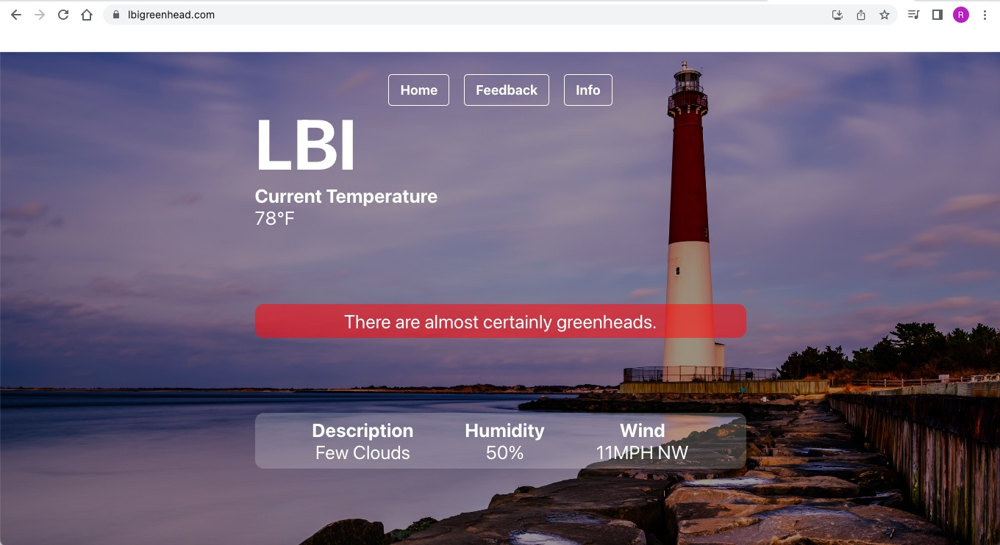
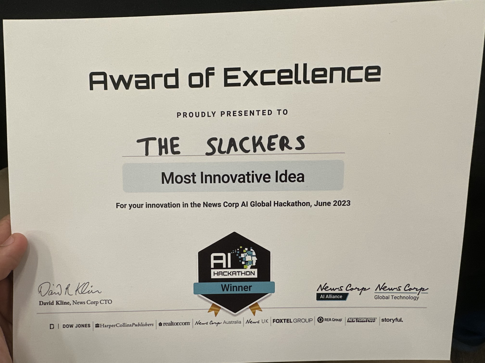

More On Projects
LBI GreenHead Project
The Problem
Nestled within the serene landscapes of Long Beach Island, where my family now calls home, lies an indigenous irritant: the greenhead, or scientifically, Tabanus nigrovittatus. These persistent bugs, notorious for their painful bites, have been a longstanding adversary for locals, including my mom. It's not uncommon for residents to reevaluate their beach outings when greenheads are in abundance. However, living amidst them has given me an insight into their behavioral patterns, influenced by specific weather and seasonal changes. Motivated by this, I initiated research with the aspiration to develop a predictive tool, enabling beach enthusiasts to anticipate and navigate these nuisances, ensuring more enjoyable coastal adventures.
Research
In my quest to understand the greenhead phenomenon near Long Beach Island, I engaged with renowned marine experts from ReClam The Bay. This environmental group has been at the forefront of efforts to protect and rejuvenate the marine ecosystems of the region, providing a wealth of knowledge and resources. Furthermore, the research conducted by the Rutgers Entomology Department played a pivotal role in my understanding. Complementing these expert insights, I embarked on a hands-on data collection process from greenhead traps along my street. This allowed me to monitor their activity throughout the summer months closely. By combining this first-hand data with the expertise of specialists and the findings from Rutgers, I meticulously crafted an algorithm capable of predicting greenhead activity, offering beach-goers a much-needed respite from these persistent pests.
Deployment
Utilizing the power of the MERN stack, I developed an intuitive application that seamlessly merges real-time weather data from WeatherMapAPI with my proprietary greenhead prediction algorithm. When users access the app, they're promptly presented with an assessment of the anticipated greenhead activity for the day. Recognizing the need for continuous improvement, I embedded a feedback mechanism within the app. This allows users to validate the prediction's accuracy. Each user submission, combined with the prevailing weather conditions and prediction data, is archived in a MongoDB database. This wealth of user-driven data not only provides insights but actively aids in fine-tuning the algorithm, ensuring its adaptability and relevance. An 'Info' section on the platform offers a brief on the pivotal research and findings that shaped this project.
Tool's Used: Python, MongoDB, Express, React, Node
Dalle-Clone
Creating a clone of OpenAI's DALL-E was both a challenging and fulfilling endeavor. The fundamental idea behind my version was to have an interactive interface where users could input prompts, and in return, they would receive AI-generated images, mirroring the capabilities of the original DALL-E. Utilizing the DALL-E API, upon receiving a user's prompt, I made API calls to fetch the generated images. This process was streamlined using Express.js, which served as the backend framework to handle API requests and responses. Node.js aided in managing the server-side operations seamlessly, ensuring the efficient fetching and storage of images.
Once the image was procured from the DALL-E API, it was essential to store it in a manner that was both scalable and easily retrievable. That's where MongoDB came into play; it served as a robust database to log each generated image's metadata. However, for actual image storage, I leveraged Cloudinary, a cloud-based image management service. It not only allowed for efficient image storage but also offered optimized delivery, ensuring that users had a fast and smooth browsing experience. On the frontend, React.js played a crucial role. It enabled the creation of a dynamic and responsive user interface. Users could search for specific images, and the React components would render a gallery view of the AI-generated images, pulling data in real-time from MongoDB and Cloudinary. This full MERN stack integration ensured a seamless flow of data, a responsive UI, and a scalable backend to handle the complexities of AI image generation.
Tool's Used: Python, MongoDB, Express, React, Node
News Corp Global AI Hack-a-thon

 Working closely with a team, we pioneered a chatbot project aimed at enhancing employee connections for our challenge: crafting a social media application to unite employees via shared interests and discussions from public channels. By extracting content from Slack channels in JSON format, we innovatively matched employees based on their project engagements and articulated passions. I spearheaded the data processing using pandas and integrated it into ChromaDB, ensuring contextual depth. We further enriched our bot's intelligence by assimilating an LLM (Language Model) for astute data interpretation. The synergy of these technologies birthed a state-of-the-art chatbot, lauded and awarded the "Most Innovative Idea" for its efficacy in fostering genuine team collaborations.
Tool's Used: Pandas, ChromaDB, Slack, Python Node